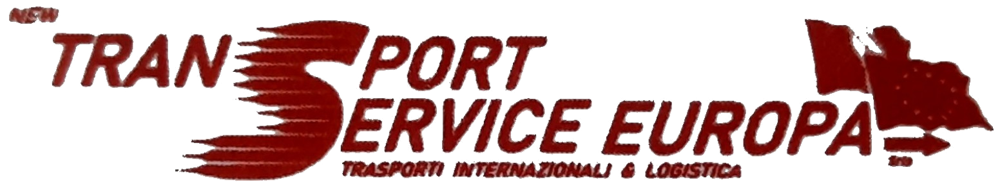

ESPRESSO
DEDICATO
Un mezzo, una missione. Per urgenze e consegne dedicate in Europa.

Trasporto industriale, espresso, ADR e logistica. Dal Nord Italia a tutta Europa.
ORGANIZZA UNA SPEDIZIONE →Un interlocutore unico per spedizioni urgenti, carichi completi, groupage, ADR e logistica. Organizzazione, controllo e tracciabilità dal ritiro alla consegna.
Un mezzo, una missione. Per urgenze e consegne dedicate in Europa.
Carichi completi e parziali, nazionali e internazionali.
Gestione dei trasporti soggetti a normativa ADR con mezzi e procedure dedicate.
Deposito, movimentazione e supporto operativo dal nostro hub.
Semirimorchi 13,60 m, motrici e furgoni per adattare capacità e velocità alle esigenze della spedizione.
Un punto operativo per deposito e movimentazione delle merci, integrato con l'attività di trasporto.
Descrivi origine, destinazione, merce e tempistiche. Il team traffico può impostare la soluzione più adatta.